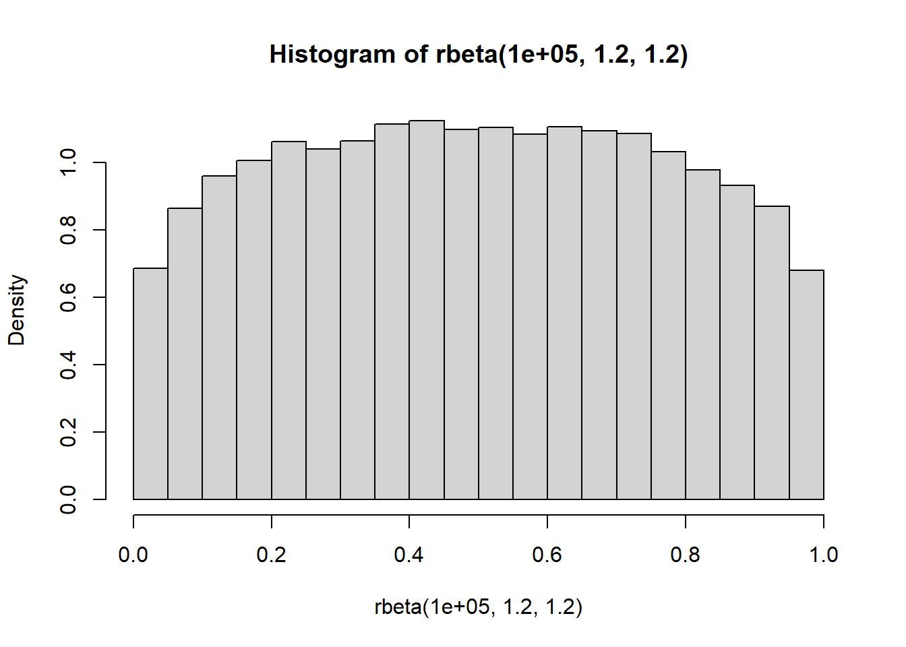

Chapter 1 Using Stan in R
1.1 Why Stan?
SAMs cannot be straightforwardly implemented with currently available software for quantitative genetic analysis, such as the frequentist ASREML program (Butler et al. 2018) or the Bayesian open-source R package MCMCglmm (Hadfield 2010). The classical animal models estimated by these programs can be used to describe reaction norms defined over non-social environments, with reaction norm slopes estimated on directly measured environmental gradients. However, social environments defined by partner phenotypes present novel challenges for animal models, such as accounting for temporal feedback between social partners’ phenotypes, differentiating the effects of assortment and social plasticity between partners, and avoiding bias due to correlated residual effects on measurements taken within and among social interactions (Martin and Jaeggi 2021). SAMs address these challenges by estimating plasticity, assortment, and selection directly on the latent social reaction norms (SRNs) governing repeatable individual variation. A highly flexible modeling framework is required to estimate these latent (i.e. indirectly measured) interactions with raw empirical data, as well as to use them for predicting social evolutionary change.
Stan (Carpenter et al. 2017) is an open-source programming language for estimating probabilistic models of arbitrary complexity, which can interface with multiple statistical environments such as R (R Core Team 2020). Stan also facilitates fully Bayesian inference using state-of-the-art Markov Chain Monte Carlo (MCMC) sampling techniques. In particular, the No U-Turn Sampler (NUTS) implimented in Stan has been found to perform particularly well for quantitative genetic analysis (Nishio and Arakawa 2019). Stan is thus an ideal platform for flexibly estimating SAMs in any empirical system, as is further discussed in the main text (Martin and Jaeggi 2021). Using Bayesian posteriors rather than point estimates will also promote more robust biological inferences with SAMs, as statistical uncertainty can be easily carried forward across multiple stages of analysis (Stinchcombe, Simonsen, and Blows 2014). This provides a crucial means of quantifying uncertainty in the predicted direction and magnitude of social evolution.
1.2 Getting Started
Stan interfaces with R through the RStan package (Carpenter et al. 2017), providing an efficient means of integrating SAMs into pre-existing data analysis pipelines. However, you will first need to install Stan on your computer and ensure that it is appropriately configured with your C++ toolchain. This can be accomplished by following the instructions for your operating system on the RStan Getting Started page. Once you are able to effectively use RStan, you can begin creating the .stan files necessary for estimating SAMs. These files can be composed using RStudio or any text editor, as explained below. Once an appropriate .stan file is prepared, it can be compiled with R for the C++ toolchain using the stan_model() function and subsequently estimated with an appropriate list of empirical data using the sampling() function. The resulting posteriors of a model can then be accessed with the extract() function and manipulated for any further quantities or analyses of interest.
library(rstan)
#compiles the model in C++ for MCMC estimation
model = stan_model("model.stan")
#estimates and saves the posterior MCMC samples of the model (estimated with default settings)
results = sampling(object = SAM_file, data = data)
#extracts posterior estimates
MCMCsamples = extract(results)1.3 Bayesian inference
A detailed overview of the benefits of Bayesian inference is beyond the scope of this guidebook, as attention is placed on coding and computational concerns rather than interpretation. We encourage researchers unfamiliar with fully Bayesian inference to see McElreath (2020) for further discussion. Lemoine (2019) also demonstrates why weakly regularizing (or “weakly informative”) priors are often preferable to the flat or diffuse priors more commonly used in evolutionary ecology. In general, we encourage researchers to utilize the benefits of fully Bayesian inference while working in Stan, rather than attempting to mimic classical inference and null-hypothesis testing approaches. Gelman et al. (2020) provide a very useful general discussion of Bayesian workflow from initial estimation to model comparison and selection. A basic understanding of MCMC and prior and posterior distributions is necessary to fully understand model estimation in Stan. MCMC provides a means of approximating any continous probability distribution, with a finite set of samples taken in proportion to the underlying target probability density. As a consequence, Stan models return objects with many MCMC samples for each model parameter, rather than single point estimates. These samples can then be summarized to approximate the shape of the truly continous target posterior distribution, as is shown throughout the coding tutorials.
1.4 Basic coding tutorial
Stan uses its own language for writing probabilistic models, including a variety of built-in functions designed to aid in efficient computation. The biggest conceptual hurdle for new users of Stan is likely to be the absence of an intuitive R-like syntax for specifying model formulas, such as formulas like y ~ x + (1|z) that can be used to quickly specify complex generalized linear mixed-effects models. These formulas facilitate highly efficient statistical modeling, but do so at the cost of limiting users’ ability to specify atypical model structures. Instead, Stan provides the benefit of nearly unlimited flexibility in model specification, with the added cost of a steeper learning curve. In particular, models must be formally specified with mathematically appropriate likelihood functions, rather than this process being handled on the back-end through textual inputs from the user such as family= poisson(link = "log"). This may at first seem like a cumbersome task, but it provides a degree of independence and creativity for data analysis that is otherwise unavailable. It is this autonomy that makes it possible to unbiasedly estimate SAMs in Stan, which to the best of our knowledge cannot be accomplished with any other mainstream statistical software. Nonetheless, it is important to recognize that some practice and trial-and-error will be required to gain competency and comfortability with Stan. We therefore encourage those interested in SAMs to review the Stan Reference Manual, as well the extensive collection of Stan Case Studies, which will provide a more robust foundation for estimating any model of interest in Stan.
Here we review some basics of Stan that will be necessary for following the coding tutorials in the rest of the guidebook. To make this introduction more concrete, we simulate a simple data structure appropriately described by a Gaussian random regression model, with 50 subjects and 2 repeated measures per subject across an environmental gradient \(x\). Formally, the model for observation i of individual j is given by
\[y_{ij}=\mu_{j}+\beta_{j}x_{ij}+\epsilon_i\] \[\mu_j=\mu_0+\mu_{\mathrm{P}j}, \quad \beta_j=\beta_1+\beta_{\mathrm{P}j}\]
\[ \begin{bmatrix} \boldsymbol{\mu_{\mathrm{P}}} \\ \boldsymbol{\beta_{\mathrm{P}}} \end{bmatrix} \sim \mathrm{MVNormal}(\boldsymbol{0}, \boldsymbol{\mathrm{P}} ) : \boldsymbol{\mathrm{P}} = \begin{bmatrix} \mathrm{Var}( \boldsymbol{\mu_{\mathrm{P}}} ) & \mathrm{Cov}( \boldsymbol{\mu_{\mathrm{P}}}, \boldsymbol{\beta_{\mathrm{P}}}) \\ \mathrm{Cov}(\boldsymbol{\beta_{\mathrm{P}}}, \boldsymbol{\mu_{\mathrm{P}}} ) & \mathrm{Var}( \boldsymbol{\beta_{\mathrm{P}}} ) \end{bmatrix} \]
\[ \boldsymbol{\epsilon} \sim \mathrm{Normal}(0, \boldsymbol{\mathrm{R}} ): \boldsymbol{\mathrm{R}} = [\mathrm{Var}(\boldsymbol{\epsilon})]\]
where \(\mu_0\) and \(\beta_1\) are fixed population-level intercepts and slopes respectively, with the vectors \(\boldsymbol{\mu_{\mathrm{P}}}\) and \(\boldsymbol{\beta_{\mathrm{P}}}\) containing individual-specific phenotypic deviations from the population values (i.e. random intercepts and slopes). The probability density function of this Gaussian variable can be equivalently written as
\[y_{ij} \sim \mathrm{Normal}(\mu_{j}+\beta_{j}x_{ij},\mathrm{Var}(\boldsymbol{\epsilon}))\] It is often easier to specify model likelihoods and priors over standard deviations and correlation matrices in Stan, rather than the variances and covariances represented in the formal model. These parameters can always be derived from one another with simple transformations. For variances and standard deviations
\[\mathrm{SD}( \boldsymbol{\mu_{\mathrm{P}}} ) = \mathrm{Sqrt(Var} (\boldsymbol{\boldsymbol{\mu_{\mathrm{P}}} }) ) , \quad \mathrm{SD}( \boldsymbol{\beta_{\mathrm{P}}} ) = \mathrm{Sqrt(Var} (\boldsymbol{\boldsymbol{\beta_{\mathrm{P}}} }) )\]
Similarly, the covariance matrix \(\boldsymbol{\mathrm{P}}\) can be derived by pre- and post-multiplying the correlation matrix \(\boldsymbol{\mathrm{P_{Cor}}}\) with diagonal matrices \(\boldsymbol{\mathrm{P_{SD}}}\) of these standard deviations
\[\boldsymbol{\mathrm{P}} = \boldsymbol{\mathrm{P_{SD}}} \boldsymbol{\mathrm{P_{Cor}}} \boldsymbol{\mathrm{P_{SD}}}\]
\[ \boldsymbol{\mathrm{P_{SD}}} = \begin{bmatrix} \mathrm{SD}( \boldsymbol{\mu_{\mathrm{P}}} ) & 0 \\ 0 & \mathrm{SD}( \boldsymbol{\beta_{\mathrm{P}}} ) \end{bmatrix}, \quad \boldsymbol{\mathrm{P_{Cor}}} = \begin{bmatrix} 1 & \mathrm{Cor}( \boldsymbol{\mu_{\mathrm{P}}}, \boldsymbol{\beta_{\mathrm{P}}} ) \\ \mathrm{Cor}( \boldsymbol{\beta_{\mathrm{P}}} , \boldsymbol{\mu_{\mathrm{P}}} ) & 1 \end{bmatrix} \]
We can simulate a random dataset from this model in R, along with an index variable id that tracks which individual (I = 1 - 50) is being measured at each observation (N = 1-100).
library(mvtnorm)
N = 100 #total observations
I = 50 #total individuals
intercept = 1 #global intercept
beta1 = 0.3 #fixed effect regression coefficient
SD_intercept = 0.3 #standard deviation of random intercepts
SD_slope = 0.3
SD_residual = 1
cor_RE = 0.3 #correlation of random intercepts and slopes
#individual-level index
id = rep(seq(1, I), each = N/I) #i.e. two observations per individual
#simulate fixed effect covariate
x = rnorm(100,0,1) #fixed effect covariate
#simulate random individual deviations
P_cor = matrix( c(1, cor_RE, cor_RE, 1), nrow = 2, ncol = 2 )
P_SD = matrix( c(SD_intercept, 0, 0, SD_slope), nrow = 2, ncol = 2 )
P_cov = P_SD %*% P_cor %*% P_SD
re_P = rmvnorm(I, mean = c(0,0), sigma = P_cov) #rows = I, cols = intercepts and slopes
#individual-level parameters
mu = intercept + re_P[,1]
beta = beta1 + re_P[,2]
#residual effects
epsilon = rnorm(100, 0, SD_residual )
#measured response (100 response values for 50 subjects)
y = mu[id] + beta[id]*x + epsilon
#combine into list for Stan
#other values are empirically unobserved and will be model parameters
stan_data = list(y = y, x = x, id = id, N = N, I = I)We can now program a Stan model to infer the data-generating process with these empirical observations. For any .stan file composed with a text editor, the following programming blocks will be recognized and all model code inside each block will be processed sequentially.
functions {
}
data {
}
transformed data {
}
parameters {
}
transformed parameters {
}
model {
}
generated quantities {
}
Only the data, parameters, and model blocks are necessary for model estimation, while the other blocks provide optional declarations and statements. In most statistical software, empirical data are input with a single matrix or dataframe. Rather than inputting a single dataframe or matix to RStan, a list can be provided with data for each scalar (real or integer), vector, or matrix declared in the .stan file. The names of these data objects are declared along with their expected dimensions, which ensures that inappropriate data structures or likelihood functions will throw errors. For the simulated data, we first declare all the measured variables and indices relevant to model estimation. We use // rather than # for comments in Stan.
data {
int<lower=0> N; //length of response vector/total observations; values less than 1 throw error
int<lower=0> I; //number of individuals
int<lower=0> id[N]; //N integer indices matching observations of y to the individual identity
vector[N] x; //vector of covariate values for fixed effect
vector[N] y; //vector of response values
}This declarative approach requires that particular attention is given to the order of data input to the model, as values will need to be appropriately aligned and indexed throughout the model specification. However, it also provides additional benefits such as facilitating multi-response models with heterogeneous dimensions, as well as allowing for arbitrarily complex forms of social interaction to be specified in the model likelihood using appropriate indices of the relevant vectors or matrices.
We specify model parameters in accordance with the formal model used for the simulation, with standard deviations and correlation matrices replacing variances and covariance matrices.
parameters {
//fixed effects
real mu_0; //global intercept
real beta_1; //fixed effect coefficient for covariate x
//random effects
corr_matrix[2] P_cor; //correlation matrix of random effects
vector<lower=0>[2] sd_P; //standard deviations of random effects
real<lower=0> sd_R; //standard deviation of residuals
matrix[I,2] re_P; //individual-level phenotypic deviations (random intercepts and slopes)
}Note that rather than declaring the random effects as separate vectors, we instead declare a matrix for both individual intercept and slope values. It is necessary to specify <lower=0> so that the standard deviation parameters are lower bound at zero.
The other parameters in the formal model are simply combinations of these fundamental parameters. In particular, the individual-level intercepts \(\mu_j\) and slopes \(\beta_j\) are determined by the sum of the population-level intercepts \(\mu_0\) and slopes \(\beta_1\) with the respective random individual deviations \(\mu_{\mathrm{P}j}\) and \(\beta_{\mathrm{P}j}\), which are contained in the re_P matrix. Similarly, the covariance matrix \(\boldsymbol{\mathrm{P}}\) can be derived with the standard deviations sd_P and the correlation matrix `P_cor as shown above. These parameters can be useful for increasing model clarity, as well for enhancing the efficiency of MCMC sampling as demonstrated further below. The transformed parameters block of a .stan file is intended for such purposes.
transformed parameters {
vector[I] mu = mu_0 + col(re_P, 1); //individual-level intercepts
vector[I] beta = beta_1 + col(re_P, 2); //individual-level intercepts
cov_matrix[2] P = diag_matrix(sd_P) * P_cor * diag_matrix(sd_P); //cov of random effects
}This code creates two new vectors mu and beta of length I containing the expected intercepts and slopes of each individual, as well as covariance matrix P derived from the standard deviations and correlation matrix. These quantities can now be used in the model block to more clearly express the likelihood function. Note that these new objects could also be declared in the model block prior to specifying the likelihood. However, any objects created in the model block are temporary and will not be saved along with the MCMC samples of objects declared in the parameters and transformed parametrs blocks. This can be useful for creating pragmatic objects that enable more efficient coding but do not need to be directly interpreted.
Following the formal model above, we specify the response \(y_{ij}\) as a function of the linear predictor containing individual intercepts \(\mu_j\) and slopes in response to the environmental covariate \(\beta_jx_{ij}\), as well as stochastic effects with standard deviation \(\mathrm{SD(\boldsymbol{\epsilon})}=\mathrm{SD_R}\). The random effects are sampled from a zero-centered multivariate normal with covariance matrix \(\boldsymbol{\mathrm{P}}\).
model {
//model likelihood
y ~ normal(mu[id] + beta[id].*x, sd_R); //index by id to match response vector length
for(i in 1:I)
re_P[i] ~ multi_normal([0,0], P );
//priors
//fixed effects
mu_0 ~ normal(0,1);
beta_1 ~ normal(0,1);
//random effects
P_cor ~ lkj_corr(2);
to_vector(sd_P) ~ cauchy(0,1);
sd_R ~ cauchy(0,1);
}
Model priors are set for all parameters declared in the original programming block, while transformed parameters do not receive priors. We use general purpose, weakly regularizing priors to reduce the risk of inferential bias and enhance model identification, which will be crucial for SAMs relying on interactions among many latent variables. Interested readers should see Lemoine (2019) and McElreath (2020) for further discussion on the choice of model priors, as well as the clear limitations of using highly diffuse, flat, and/or improper priors that are more commonly utilized. Finally, rather than post-processing the posterior SDs ourselves to derive variances, we can instead use the generated quantities block to calculate the variances during model estimation.
generated quantities {
vector[2] V_P = sd_P .* sd_P;
real V_R = sd_R * sd_R;
}The posterior object returned from this model will now contain the random effects variances and covariance matrix, along with the SDs and correlation matrix. Each of these blocks can be saved together in a single .stan file with an empty line break left at the end of the file. This can be accomplished with a text editor or inside R.
data {
int<lower=0> N; //length of response/total observations; values < 1 throw error
int<lower=0> I; //number of individuals
int<lower=0> id[N]; //matches observations of y to the individual identity
vector[N] x; //vector of covariate values for fixed effect
vector[N] y; //vector of response values
}
parameters {
//fixed effects
real mu_0; //global intercept
real beta_1; //fixed effect coefficient for covariate x
//random effects
corr_matrix[2] P_cor; //correlation matrix of random effects
vector<lower=0>[2] sd_P; //standard deviations of random effects
real<lower=0> sd_R; //standard deviation of residuals
matrix[I,2] re_P; //individual-level phenotypic deviations (random intercepts and slopes)
}
transformed parameters {
vector[I] mu = mu_0 + col(re_P, 1); //individual-level intercepts
vector[I] beta = beta_1 + col(re_P, 2); //individual-level intercepts
cov_matrix[2] P = diag_matrix(sd_P) * P_cor * diag_matrix(sd_P); //cov of random effects
}
model {
//model likelihood
y ~ normal(mu[id] + beta[id].*x, sd_R); //index by id to match response vector length
for(i in 1:I)
re_P[i] ~ multi_normal([0,0], P );
//priors
//fixed effects
mu_0 ~ normal(0,1);
beta_1 ~ normal(0,1);
//random effects
P_cor ~ lkj_corr(2);
to_vector(sd_P) ~ cauchy(0,1);
sd_R ~ cauchy(0,1);
}
generated quantities {
vector[2] V_P = sd_P .* sd_P;
real V_R = sd_R * sd_R;
}
The model is now ready for estimation. We manually specify that the MCMC sampler should use 1000 iterations per chain to converge on the target joint posterior distribution warmup=1000, with the subsequent 1000 iterations used as posterior samples iter = 2000 (i.e. iter - warmup = number of MCMC samples per chain). init = 0 initializes the samplers near null values. Four MCMC chains are used to assess model convergence across independent random samplers chains=4, with one core assigned to each chain for parallel processing cores=4. The adapt_delta=0.90 argument reduces the risk of divergent transitions during sampling.
library(rstan)
stan_mod = stan_model(model_code = "model1.stan")
stan_results <- sampling(stan_mod, data=stan_data, init = 0, warmup=1500, iter = 2500,
chains=4, cores=4, control=list(adapt_delta=0.90) )Stan flags a few potential issues with the MCMC sampler. Further description of these and other warnings can be found in the Stan Warning Guide. One warning is that “The largest R-hat is NA, indicating chains have not mixed”. Stan does not know whether some parameter values are fixed (causing Rhat = NA) because the sampler is stuck, or because the model has been intentionally specified with fixed parameter values (e.g. diagonals fixed to 1 in a correlation matrix or an intercept forced to 0). For the specified model, this is a harmless warning that can be safely ignored. However, we can also check for issues by looking at the Rhat values of all model parameters using summary() on the saved results. If an expected parameter is missing from the table or shows NA, this likely indicates an unintentional error in the model code.
In addition to the Rhat warning, the effective sample sizes of some model parameters are too low to ensure accurate inferences. It is helpful to see which parameters are causing these warnings by sorting on the lowest n_eff values in the summary table.
It is typical that individual-specific trait values have relatively lower effective sample sizes than the population-level parameters of primary interest (e.g. the intercept deviation of individual 9 re_P[9,1] and their total intercept mu[9] compared to the global intercept mu_0). More damningly, however, we also see an extremely low effective sample for lp__, which is the joint log density of the model (up to a constant internally defined scale factor. This provides further evidence that the model, as currently defined, is poorly identified. The key random effect SDs sd_P and variances V_P are also very poorly sampled, along with the residual SD sd_R and variance V_R. We could run the MCMC sampler for more iterations, increase the warm-up period, and change various other manual control settings. However, the deeper issue with the estimation procedure is not that the model is poorly defined or that the data provide insufficient information; rather, we have inefficiently parameterized the model.
1.4.1 Cholesky decompositions
Although the .stan file appropriately represents the formal model, it is programmed in such a way that the MCMC sampler has troubling sampling from the joint posterior distribution of the model. One of the first things we can do to increase efficiency is to reduce redundant computation over matrices in our model. This can be done with Cholesky decompositions. For any positive definite matrix \(\boldsymbol{\Omega}\), a Cholesky decomposition can be defined such that
\[\boldsymbol{\Omega} = \boldsymbol{\mathrm{L}_{\Omega}} \boldsymbol{\mathrm{L}_{\Omega}}^{\mathrm{T}}\] where \(\boldsymbol{\mathrm{L}_{\Omega}}\) is a lower-triangular matrix and \(^{\mathrm{T}}\) indicates matrix transposition. This property means that we can always do computations of reduced dimensionality on the lower-triangular matrix \(\boldsymbol{\mathrm{L}_{\Omega}}\) and subsequently recover the full positive-definitive matrix \(\boldsymbol{\Omega}\) by post-multiplying \(\boldsymbol{\mathrm{L}_{\Omega}}\) with its transpose.
Stan provides many built-in functions for easily defining and manipulating Cholesky decomposed matrices, which we can use to re-parameterize the .stan file. Comments are added below where Cholesky decompositions have been introduced.
data {
int<lower=0> N;
int<lower=0> I;
int<lower=0> id[N];
vector[N] x;
vector[N] y;
}
parameters {
//fixed effects
real mu_0;
real beta_1;
//random effects
cholesky_factor_corr[2] LP_cor; //lower tri Cholesky of random effect cor matrix
vector<lower=0>[2] sd_P;
real<lower=0> sd_R;
matrix[I,2] re_P;
}
transformed parameters {
vector[I] mu = mu_0 + col(re_P, 1);
vector[I] beta = beta_1 + col(re_P, 2);
cholesky_factor_cov[2] LP = diag_pre_multiply(sd_P, LP_cor); //Cholesky of random effect cov
}
model {
//model likelihood
y ~ normal(mu[id] + beta[id].*x, sd_R);
for(i in 1:I)
re_P[i] ~ multi_normal_cholesky([0,0], LP); //likelihood expecting Cholesky cov
//priors
//fixed effects
mu_0 ~ normal(0,1);
beta_1 ~ normal(0,1);
//random effects
LP_cor ~ lkj_corr_cholesky(2); //prior for Cholesky matrix
to_vector(sd_P) ~ cauchy(0,1);
sd_R ~ cauchy(0,1);
}
generated quantities {
vector[2] V_P = sd_P .* sd_P;
real V_R = sd_R * sd_R;
corr_matrix[2] P_cor = LP_cor*LP_cor' ; //multiply by transpose to get full cor matrix
cov_matrix[2] P = diag_matrix(V_P) * P_cor * diag_matrix(V_P); //full cov matrix
}
The full covariance and correlation matrices are now specified in the generated quantities block.
1.4.2 Non-centered random effects
In addition to Cholesky decompositions, we can also re-parameterize the random effects to further enhance efficiency. Currently, we express the unobserved random effects in re_P as being generated from a distribution with unobserved (lower Cholesky) covariance matrix LP. While mathematically appropriate, this specification can make it difficult for the model to identify the scale of the random effects. An alternative but mathematically equivalent parameterization can be used to separating out the scale of the random effect deviations from the population-level (co)variances, which often will enhance model identification. Note that any normally distributed random variable \(\boldsymbol{z}\) where
\[\boldsymbol{z} \sim \mathrm{Normal}(0,\sigma_z)\] can also be expressed as a standard normal variable \(z_{std}\) scaled by the original SD \[\boldsymbol{z} \equiv \boldsymbol{z_{\mathrm{std}}}\sigma_z\] \[\boldsymbol{z_{\mathrm{std}}} \sim \mathrm{Normal}(0,1)\] Similarly for a n x p matrix \(\boldsymbol{Z}\) of p multivariate phenotypes with covariance matrix \(\boldsymbol{\Sigma}\)
\[\boldsymbol{Z} \equiv \boldsymbol{Z_{\mathrm{std}}} \boldsymbol{\mathrm{L}_{\Sigma}}\] \[\mathrm{vec}(\boldsymbol{Z_{\mathrm{std}}}) \sim \mathrm{MVNormal}(\boldsymbol{0},\boldsymbol{\mathrm{I}})\] where \(\boldsymbol{\mathrm{L}_{\Sigma}}\) is the lower-triangular Cholesky decomposition. Implementing this so-called “non-centered parameterization” is straightforward in Stan. Building on the Cholesky decompositions added in the previous subsection
data {
int<lower=0> N;
int<lower=0> I;
int<lower=0> id[N];
vector[N] x;
vector[N] y;
}
parameters {
//fixed effects
real mu_0;
real beta_1;
//random effects
cholesky_factor_corr[2] LP_cor;
vector<lower=0>[2] sd_P;
real<lower=0> sd_R;
matrix[I,2] std_P; //now matrix of standard normals (see priors below)
}
transformed parameters {
matrix[I,2] re_P = std_P * diag_pre_multiply(sd_P,LP_cor); //non-centered parameterization
vector[I] mu = mu_0 + col(re_P, 1);
vector[I] beta = beta_1 + col(re_P, 2);
}
model {
//model likelihood
y ~ normal(mu[id] + beta[id].*x, sd_R);
//priors
//fixed effects
mu_0 ~ normal(0,1);
beta_1 ~ normal(0,1);
//random effects
to_vector(std_P) ~ std_normal(); //new prior distribution over standard normal deviations
LP_cor ~ lkj_corr_cholesky(2);
to_vector(sd_P) ~ cauchy(0,1);
sd_R ~ cauchy(0,1);
}
generated quantities {
vector[2] V_P = sd_P .* sd_P;
real V_R = sd_R * sd_R;
corr_matrix[2] P_cor = LP_cor*LP_cor' ;
cov_matrix[2] P = diag_matrix(V_P) * P_cor * diag_matrix(V_P);
}
Note that the specification of the random effects has been greatly simplified with the non-centered parameterization. By separating out the scale of the deviations and the population-level (co)variances, it becomes unnecessary to directly specify the generative distribution of the full random effects as above. Instead, the full distribution is partitioned into three independent priors over the random effect standard normal deviations, SDs, and correlations. This should make the model much easier to sample from.
library(rstan)
#non-centered Cholesky parameterization
stan_mod = stan_model(model_code = "model2.stan")
#estimate model
stan_results <- sampling(stan_mod, data=stan_data, init = 0, warmup=1500, iter = 2500,
chains=4, cores=4, control=list(adapt_delta=0.90) )
#extracts posterior estimates
MCMCsamples = extract(stan_results)The absence of warning messages indicates that our mathematically equivalent re-parameterizations have enhanced the efficiency of the MCMC sampler. The posterior samples of the model in MCMCsamples can subsequently be extracted, summarized, visualized, and manipulated. E.g.
post_beta_1 = MCMCsamples$beta_1 #extract population-level slope
median(post_beta_1) #central tendency of posterior
mad(post_beta_1) #dispersion around central tendency
quantile(post_beta_1, c(0.05,0.95)) #90% credible interval
sum(post_beta_1 > 0)/length(post_beta_1) #posterior probability of + effect
hist(post_beta_1) #MCMC approximation of posterior distributionWe encourage the use of the shinystan R package for deeper inspection of model convergence with a GUI prior to extraction of posterior results. In general, researchers should be skeptical of reporting results accompanied with sampler warnings and should seek to remove any diagnostic concerns prior to biological interpretation of the estimates.
1.5 Animal models
The model presented above assumes a single set of individual-specific intercepts and slopes, as defined by the mu and beta vectors in the .stan file. For quantitative genetic analysis with an animal model, these phenotypic effects can be further decomposed into distinct genetic and permanent environmental trait values. In particular, we expand the random phenotypic deviations so that
\[ \boldsymbol{\mu_{\mathrm{P}}} = \boldsymbol{\mu_{\mathrm{A}}} + \boldsymbol{\mu_{\mathrm{E}}}, \quad \boldsymbol{\beta_{\mathrm{P}}} = \boldsymbol{\beta_{\mathrm{A}}} + \boldsymbol{\beta_{\mathrm{E}}}\] \[ \begin{bmatrix} \boldsymbol{\mu_{\mathrm{A}}} \\ \boldsymbol{\beta_{\mathrm{A}}} \end{bmatrix} \sim \mathrm{MVNormal}(\boldsymbol{0}, \boldsymbol{\mathrm{G}} \otimes \boldsymbol{\mathrm{A}}) : \boldsymbol{\mathrm{G}} = \begin{bmatrix} \mathrm{Var}( \boldsymbol{\mu_{\mathrm{A}}} ) & \mathrm{Cov}( \boldsymbol{\mu_{\mathrm{A}}}, \boldsymbol{\beta_{\mathrm{A}}}) \\ \mathrm{Cov}(\boldsymbol{\beta_{\mathrm{A}}}, \boldsymbol{\mu_{\mathrm{A}}} ) & \mathrm{Var}( \boldsymbol{\beta_{\mathrm{A}}} ) \end{bmatrix} \]
\[ \begin{bmatrix} \boldsymbol{\mu_{\mathrm{E}}} \\ \boldsymbol{\beta_{\mathrm{E}}} \end{bmatrix} \sim \mathrm{MVNormal}(\boldsymbol{0}, \boldsymbol{\mathrm{E}} \otimes \boldsymbol{\mathrm{I}}) : \boldsymbol{\mathrm{E}} = \begin{bmatrix} \mathrm{Var}( \boldsymbol{\mu_{\mathrm{E}}} ) & \mathrm{Cov}( \boldsymbol{\mu_{\mathrm{E}}}, \boldsymbol{\beta_{\mathrm{E}}}) \\ \mathrm{Cov}(\boldsymbol{\beta_{\mathrm{E}}}, \boldsymbol{\mu_{\mathrm{E}}} ) & \mathrm{Var}( \boldsymbol{\beta_{\mathrm{E}}} ) \end{bmatrix} \]
where \(\boldsymbol{\mathrm{A}}\) is a positive-definite relatedness matrix derived from pedigree or molecular data. Two challenges arise when estimating such a model in Stan related to the computation of Kronecker products and the identification of genetic effects.
1.5.1 Kronecker products
There are no in-built Stan functions for computing Kronecker products \(\otimes\). This could be overcome by manually specifying the Kronecker product function in the optional functions block of the model. Regardless, Kronecker products can be incredibly costly to compute, particularly for large matrices. It’s thus desirable to find another alternative but mathematically equivalent parameterization to return random effects appropriately scaled by \(\boldsymbol{\mathrm{G}} \otimes \boldsymbol{\mathrm{A}}\) without directly computing this term.
Fortunately, this can be easily accomplished by exploiting the properties of the matrix normal distribution, which generalizes the multivariate normal distribution to random variables described by matrices (Gupta and Nagar 2018). In particular, the matrix normal distribution for some n x p matrix \(\boldsymbol{\mathrm{Y}}\) of p phenotypes is given by
\[ \boldsymbol{\mathrm{Y}} \sim \mathrm{Matrix\ Normal_{n \ x \ p}}(\boldsymbol{\mathrm{M}}, \boldsymbol{\mathrm{U}}, \boldsymbol{\mathrm{V}}) \]
where \(\boldsymbol{\mathrm{M}}\) is a matrix of expected values and \(\boldsymbol{\mathrm{U}}\) and \(\boldsymbol{\mathrm{V}}\) are scaling matrices describing the among-row and among-column (co)variance respectively. This lesser known distribution generalizes from the multivariate normal distribution such that any matrix \(\boldsymbol{\mathrm{Y}}\) will be matrix normally distributed if and only if
\[ \mathrm{vec}(\boldsymbol{\mathrm{Y}}) \sim \mathrm{MVNormal_{np}}(\mathrm{vec}(\boldsymbol{\mathrm{M}}), \boldsymbol{\mathrm{V}} \otimes \boldsymbol{\mathrm{U}} ) \]
where \(\mathrm{vec}()\) is the vector operator, as used above in the model2.stan file. Given that we are interested in generating random effects with covariance \(\boldsymbol{\mathrm{G}} \otimes \boldsymbol{\mathrm{A}}\), direct computation of the Kronecker product can be avoided by instead sampling the random effects from a matrix normal distribution with the appropriate scaling matrices, i.e. for the for the I x 2 matrix of additive genetic intercepts and slope deviations for I individuals
\[ \begin{bmatrix} \boldsymbol{\mu_{\mathrm{A}}} & \boldsymbol{\beta_{\mathrm{A}}} \end{bmatrix} \sim \mathrm{Matrix\ Normal_{I \ x \ 2}}(\boldsymbol{\mathrm{0}}, \boldsymbol{\mathrm{A}}, \boldsymbol{\mathrm{G}}) \]
We can use the non-centered parameterization described above for the multivariate normal distribution to also more efficiently sample from this matrix normal distribution. In particular, a matrix \(\boldsymbol{\mathrm{Z_{_{I \ x \ 2}}}}\) can be defined for I individual standard normal deviations on each of 2 random effects, which are distributed such that
\[\boldsymbol{\mathrm{Z_{std}}} \sim \mathrm{Matrix\ Normal_{I \ x \ 2}}(\boldsymbol{\mathrm{0}}, \boldsymbol{\mathrm{I}}, \boldsymbol{\mathrm{I}}) \]
The desired matrix of appropriately scaled, zero-centered random effects can then be defined such that
\[\begin{bmatrix} \boldsymbol{\mu_{\mathrm{A}}} & \boldsymbol{\beta_{\mathrm{A}}} \end{bmatrix} = \boldsymbol{0}+\boldsymbol{\mathrm{L_A}} \boldsymbol{\mathrm{Z_{std}}} \boldsymbol{\mathrm{L_G}}^{\mathrm{T}}\] where \[\begin{bmatrix} \boldsymbol{\mu_{\mathrm{A}}} & \boldsymbol{\beta_{\mathrm{A}}} \end{bmatrix} \sim \mathrm{Matrix\ Normal_{I \ x \ 2}}(\boldsymbol{0}, \boldsymbol{\mathrm{L_A}} \boldsymbol{\mathrm{L_A}}^{\mathrm{T}}, \boldsymbol{\mathrm{L_G}} \boldsymbol{\mathrm{L_G}}^{\mathrm{T}} )\]
As explained above, \(\boldsymbol{\mathrm{L_A}}\) is the lower triangular Cholesky decomposition of the \(\boldsymbol{\mathrm{A}}\) matrix, while \(\boldsymbol{\mathrm{L_G}}^{\mathrm{T}}\) is the transpose of the lower triangular Cholesky decomposition of the \(\boldsymbol{\mathrm{G}}\) covariance matrix. This sampling property of the matrix normal distribution therefore facilitates sampling from
\[ \mathrm{vec}( \begin{bmatrix} \boldsymbol{\mu_{\mathrm{A}}} & \boldsymbol{\beta_{\mathrm{A}}} \end{bmatrix} ) \sim \mathrm{MVNormal_{np}}(\mathrm{vec}(\boldsymbol{\mathrm{0}}), \boldsymbol{\mathrm{G}} \otimes \boldsymbol{\mathrm{A}} )\]
through the multiplication of the \(\boldsymbol{\mathrm{Z_{std}}}\), \(\boldsymbol{\mathrm{L_A}}\), and \(\boldsymbol{\mathrm{L_G}}^{\mathrm{T}}\) matrices.
This useful sampling property is straightforward to implement in Stan with appropriate data and can be used to account for any form of random effect covariation among individuals, which may extend beyond \(\boldsymbol{\mathrm{A}}\) alone. Thomson et al. (2018) provide an extensive review of various additional sources of autocorrelation that should be considered in quantitative genetic analyses.
This matrix normal approach is demonstrated in the SAM tutorial with simulated data. Here we review the relevant code in Stan to highlight how any relevant Kronecker product could be implemented. We build on the data simulation above by assuming that an additional relatedness matrix \(\boldsymbol{{\mathrm{A}}}\) is now available for partitioning the previously modelled phenotypic effects. The code of model2.stan can be modified accordingly, so that the mixed-effects model becomes an animal model for quantitative genetic analysis. The relatedness matrix \(\boldsymbol{{\mathrm{A}}}\) is declared in the data block, while the lower triangle Cholesky decomposition matrix \(\boldsymbol{\mathrm{L_A}}\) is generated in the transformed data block.
data {
int<lower=0> N;
int<lower=0> I;
int<lower=0> id[N];
vector[N] x;
vector[N] y;
matrix[I] A; //new relatedness matrix
}
transformed data{
matrix[I,I] LA = cholesky_decompose(A); //lower triangle relatedness matrix
}New parameters are declared for the separate genetic (G) and permanent environmental (E) effects.
parameters {
//fixed effects
real mu_0;
real beta_1;
//random effects
cholesky_factor_corr[2] LG_cor; //additive genetic cor matrix
cholesky_factor_corr[2] LE_cor; //permanent environmental cor matrix
vector<lower=0>[2] sd_G; //SD of genetic effects
vector<lower=0>[2] sd_E; //SD of environmental effects
real<lower=0> sd_R;
matrix[I,2] std_G; //matrix of standard normals for G effects
matrix[I,2] std_E; //matrix of standard normals for E effects
}The appropriately scaled random deviations can then be specified in the transformed parameters block. The matrix normal parameterization is required for the additive genetic random effects, while the simpler non-centered approach may instead be used for the permanent environmental effects that are independently distributed among individuals. The ' function can also be used to return the transpose of the Cholesky decomposed covariance matrix \(\boldsymbol{\mathrm{L_G}}=\boldsymbol{\mathrm{G_{SD}}}\boldsymbol{\mathrm{L_{G_{Cor}}}}\) in Stan.
transformed parameters {
matrix[I,2] re_G = LA * std_G * diag_pre_multiply(sd_G,LG_cor)' ; //matrix normal
matrix[I,2] re_E = std_E * diag_pre_multiply(sd_E,LE_cor); //non-centered
vector[I] mu = mu_0 + col(re_G, 1) + col(re_E, 1); //P = G + E
vector[I] beta = beta_1 + col(re_G, 2) + col(re_E, 2); //P = G + E
}With the addition of new priors in the model block
to_vector(std_devG) ~ std_normal(); //standard normal deviates
to_vector(std_devE) ~ std_normal();
LG_cor ~ lkj_corr_cholesky(2);
LE_cor ~ lkj_corr_cholesky(2);
to_vector(sd_G) ~ cauchy(0,1);
to_vector(sd_E) ~ cauchy(0,1);the model will be well defined and equivalent to the simpler formal model defined with Kronecker products of covariance matrices. Note that the permanent environmental effects are defined as they were for the purely phenotypic effects above, without consideration of the Kronecker product \(\boldsymbol{\mathrm{E}}\otimes\boldsymbol{\mathrm{I}}\). This product indicates that individuals’ trait values are independent and identically distributed, so that ignoring the Kronecker product in Stan with re_E = std_E * diag_pre_multiply(sd_E,LE_cor) is equivalent to specifying the matrix normal parameterization with additional Cholesky identity matrix \(\boldsymbol{\mathrm{L_{I}}}\), i.e. re_E = LI * std_E * diag_pre_multiply(sd_E,LE_cor)'.
1.5.2 Identifying genetic effects
This matrix normal approach makes the animal model computationally efficient, but a more fundamental issue remains for identifying the scales of the distinct \(\boldsymbol{\mathrm{G}}\) and \(\boldsymbol{\mathrm{E}}\) effects during model estimation. Given that \(\boldsymbol{\mathrm{P}}=\boldsymbol{\mathrm{G}} + \boldsymbol{\mathrm{E}}\) under the assumption of independent additive effects, it can be difficult to uniquely identify the scale of the distinct genetic and environmental trait values, as any increase/decrease in genetic trait values can be compensated by an equivalent decrease/increase in the environmental trait value to achieve equivalent phenotypic values. In principle, this issue is addressed by the fixed information in \(\boldsymbol{\mathrm{A}}\) that is provided to the model prior to estimation. In reality, however, relatedness matrices in the wild are often quite sparse, with most elements at or near 0. As a consequence, when a single individual-level parameter is expressed as the sum of two distinct parameters, as differentiated by the scaling of \(\boldsymbol{\mathrm{A}}\) and \(\boldsymbol{\mathrm{I}}\), it can be challenging to identify the proportion of variance attributable to each effect. Note that in the simplest case of completely unrelated individuals, i.e. \(\boldsymbol{\mathrm{A}} = \boldsymbol{\mathrm{I}}\), genetic and environmental effects are completely confounded and cannot be uniquely identified without introducing further assumptions, as any combination of genetic and environmental values summing to the same value will fit the data equally well.
Fortunately, in spite of the empirical reality of sparse relatedness matrices, it is possible to parameterize an animal model in Stan so that even weakly identified genetic effects can be disentangled from environmental effects, using whatever information is provided by the fixed relatedness matrix and empirical data. This is accomplished by re-expressing the scale of the \(\boldsymbol{\mathrm{G}}\) and \(\boldsymbol{\mathrm{E}}\) effects not as independent parameters, but rather as dependent variances derived from their proportion of a common phenotypic variance parameter. In other words, the model only has to identify the scale of the total phenotypic trait values rather than attempting to identify two independent but potentially confounded random effect variances, i.e.
\[\mathrm{Var}(\boldsymbol{\mu_\mathrm{P}}) = \frac { \mathrm{Var}(\boldsymbol{\mu_{\mathrm{A}}}) }{\mathrm{Var}(\boldsymbol{\mu_{\mathrm{P}}})}\mathrm{Var}(\boldsymbol{\mu_\mathrm{P}}) + \frac { \mathrm{Var}(\boldsymbol{\mu_{\mathrm{E}}}) }{\mathrm{Var}(\boldsymbol{\mu_{\mathrm{P}}})}\mathrm{Var}(\boldsymbol{\mu_\mathrm{P}})\]
\[\mathrm{Var}(\boldsymbol{\beta_\mathrm{P}}) = \frac { \mathrm{Var}(\boldsymbol{\beta_{\mathrm{A}}}) }{\mathrm{Var}(\boldsymbol{\beta_{\mathrm{P}}})}\mathrm{Var}(\boldsymbol{\beta_\mathrm{P}}) + \frac { \mathrm{Var}(\boldsymbol{\beta_{\mathrm{E}}}) }{\mathrm{Var}(\boldsymbol{\beta_{\mathrm{P}}})}\mathrm{Var}(\boldsymbol{\beta_\mathrm{P}})\]
The additive genetic proportions can be conceptualized as reaction norm heritabilities for the intercept and slope parameters
\[h_{\mu}^{2} =\frac { \mathrm{Var}(\boldsymbol{\mu_{\mathrm{A}}}) }{\mathrm{Var}(\boldsymbol{\mu_{\mathrm{P}}})}\] \[h_{\beta}^{2}=\frac { \mathrm{Var}(\boldsymbol{\beta_{\mathrm{A}}}) }{\mathrm{Var}(\boldsymbol{\beta_{\mathrm{P}}})}\]
Given that there are only two individual-level random effects, the proportion of variance attributable to environmental effects is necessarily \(1-h_{\mu}^{2}\) and \(1-h_{\beta}^{2}\) for intercepts and slopes respectively. This alternative parameterization is again mathematically equivalent to the previous model, but it is much easier for Stan to estimate appropriately.
To implement this trick, we respecify the model parameters, removing the distinct genetic and environmental SDs and replacing them with common phenotypic SD scale parameters and reaction norm heritability parameters, which can subsequently be used to scale the distinct genetic and environmental standard normal deviates and correlation matrices in the transformed parameters block. This final model is given by
data {
int<lower=0> N;
int<lower=0> I;
int<lower=0> id[N];
vector[N] x;
vector[N] y;
matrix[I] A; //relatedness matrix
}
transformed data{
matrix[I,I] LA = cholesky_decompose(A); //lower tri Cholesky matrix
}
parameters {
//fixed effects
real mu_0;
real beta_1;
//random effects
cholesky_factor_corr[2] LG_cor; //additive genetic cor matrix
cholesky_factor_corr[2] LE_cor; //permanent environmental cor matrix
vector<lower=0>[2] sd_P; //total phenotypic SD (removed distinct G and E SDs)
real<lower=0> sd_R;
matrix[I,2] std_G; //matrix of standard normals for G effects
matrix[I,2] std_E; //matrix of standard normals for E effects
//RN heritability (proportion between 0 and 1)
vector<lower=0,upper=1>[2] RN_h2;
}
transformed parameters {
vector<lower=0>[2] sd_G; //SDs of G effects
vector<lower=0>[2] sd_E; //SDs of E effects
matrix[I,2] re_G; //scaled G random effects
matrix[I,2] re_E; //scaled E random effects
vector[I] mu; //total individual intercepts
vector[I] beta; //total individual slopes
//SDs of genetic effects, sqrt(phenotypic variance * h2)
sd_G[1] = sd_P[1] * sqrt(RN_h2[1]); //genetic SD for ind intercepts
sd_G[2] = sd_P[2] * sqrt(RN_h2[2]); //genetic SD for ind slopes
//SDs of environmental effects, sqrt(phenotypic variance * [1-h2])
sd_E[1] = sd_P[1] * sqrt(1 - RN_h2[1]); //environment SD for ind intercepts
sd_E[2] = sd_P[2] * sqrt(1 - RN_h2[2]); //environment SD for ind slopes
//matrix normal parameterization
re_G = LA * std_devG * diag_pre_multiply(sd_G, LG_cor)' ;
//non-centered parameterization
re_E = std_devE * diag_pre_multiply(sd_E, LE) ;
//phenotypic RN effects, P = G + E
re_P = re_G + re_E;
//total trait values (+ population fixed effects)
mu = mu_0 + col(re_G, 1) + col(re_E, 1); //P = G + E
beta = beta_1 + col(re_G, 2) + col(re_E, 2); //P = G + E
}
model {
//model likelihood
y ~ normal(mu[id] + beta[id].*x, sd_R);
//priors
//fixed effects
mu_0 ~ normal(0,1);
beta_1 ~ normal(0,1);
//random effects
to_vector(std_G) ~ std_normal(); //genetic std normal deviates
to_vector(std_E) ~ std_normal(); //environmental std normal deviates
LG_cor ~ lkj_corr_cholesky(2); //genetic correlations
LE_cor ~ lkj_corr_cholesky(2); //environmental correlations
to_vector(sd_P) ~ cauchy(0,1); //only phenotypic scale
sd_R ~ cauchy(0,1);
//reaction norm heritability
to_vector(RN_h2) ~ beta(1.2,1.2);
}
generated quantities {
matrix[2,2] Gcor = LG * LG'; //genetic cor
matrix[2,2] Ecor = LE * LG'; //environmental cor
matrix[2,2] Rcor = LR * LR'; //residual cor
matrix[2,2] Gcov = diag_matrix(sd_G)*Gcor*diag_matrix(sd_G); //genetic cov
matrix[2,2] Ecov = diag_matrix(sd_E)*Ecor*diag_matrix(sd_E); //environmental cov
matrix[2,2] Rcov = diag_matrix(sd_R)*Rcor*diag_matrix(sd_R); //residual cov
matrix[2,2] Pcov = Gcov + Ecov; //phenotypic covariance (assuming independent effects)
matrix[2,2] Pcor = inverse(diag_matrix(sd_P))*Pcov*inverse(diag_matrix(sd_P)); //phenotypic cor
//variances
vector<lower=0>[2] V_P = sd_P .* sd_P;
vector<lower=0>[2] V_G = sd_G .* sd_G;
vector<lower=0>[2] V_E = sd_E .* sd_E;
vector<lower=0>[2] V_R = sd_R .* sd_R;
}
Note that because we specify phenotypic SDs sd_P, the genetic SDs sd_G are calculated as \(\mathrm{sqrt} ({\mathrm{Var}(\boldsymbol{\mu_{\mathrm{P}}})}h_{\mu}^{2})= {\mathrm{SD}(\boldsymbol{\mu_{\mathrm{P}}})}\mathrm{sqrt}(h_{\mu}^{2})\) and \(\mathrm{sqrt} ({\mathrm{Var}(\boldsymbol{\beta_{\mathrm{P}}})}h_{\beta}^{2})= {\mathrm{SD}(\boldsymbol{\beta_{\mathrm{P}}})}\mathrm{sqrt}(h_{\beta}^{2})\), with the same approach taken for the proportion of environmental effects \(1- h_{\mu}^{2}\) and \(1-h_{\beta}^{2}\). A weakly regularizing \(\mathrm{Beta}(1.2,1.2)\) prior is placed on the reaction norm heritability parameters, which are constrained between 0 and 1. This and any other prior can be easily visualized in R by randomly sampling from the relevant distribution.

This prior is therefore relatively flat and uninformative over the range of plausible values, but provides very weak regularization by giving lower relative probability at the extreme ends approaching 0 (no genetic effect) and 1 (complete genetic effect). With more than two individual-level random effects, such as when specifying multiple matrices of individual autocorrelation (Thomson et al. 2018), SDs and variances can instead be parameterized as scaled simplexes.
Resources
Butler, D. G., B. R. Cullis, A. R. Gilmour, B. J. Gogel, and R. Thompson. 2018. ASReml-R Reference Manual (version 4). Hemel Hempstead, UK: VSN International Ltd. https://asreml.kb.vsni.co.uk/wp-content/uploads/sites/3/2018/02/ASReml-R-Reference-Manual-4.pdf.
Carpenter, B., A. Gelman, M. D. Hoffman, D. Lee, B. Goodrich, M. Betancourt, and... A. Riddell. 2017. “Stan: A Probabilistic Programming Language.” Journal of Statistical Software 74. https://www.jstatsoft.org/article/view/v076i01.
Gelman, A., A. Vehtari, D. Simpson, C. C. Margossian, B. Carpenter, Y. Yao, and... M. Modrák. 2020. “Bayesian Workflow.” arXiv Preprint arXiv:2011.01808. https://arxiv.org/abs/2011.01808.
Gupta, A. K., and D. K. Nagar. 2018. Matrix Variate Distributions. CRC Press. https://www.routledge.com/Matrix-Variate-Distributions/Gupta-Nagar/p/book/9781584880462.
Hadfield, J. D. 2010. “MCMC Methods for Multi-Response Generalized Linear Mixed Models: The Mcmcglmm R Package.” Journal of Statistical Software 33. https://mran.microsoft.com/snapshot/2016-10-12/web/packages/MCMCglmm/vignettes/Overview.pdf.
Lemoine, N. P. 2019. “Moving Beyond Noninformative Priors: Why and How to Choose Weakly Informative Priors in Bayesian Analyses.” Oikos 128. https://onlinelibrary.wiley.com/doi/full/10.1111/oik.05985.
Martin, J. S., and A. V. Jaeggi. 2021. “Social Animal Models for Quantifying Plasticity, Assortment, and Selection on Interacting Phenotypes.” Journal of Evolutionary Biology XX. XX.
McElreath, R. 2020. Statistical Rethinking: A Bayesian Course with Examples in R and Stan. 2nd ed. CRC Press. https://xcelab.net/rm/statistical-rethinking/.
Nishio, M., and A. Arakawa. 2019. “Performance of Hamiltonian Monte Carlo and No-U-Turn Sampler for Estimating Genetic Parameters and Breeding Values.” Genetics Selection Evolution 51. https://gsejournal.biomedcentral.com/articles/10.1186/s12711-019-0515-1.
R Core Team. 2020. R: A Language and Environment for Statistical Computing. Vienna, Austria: R Foundation for Statistical Computing. https://www.R-project.org.
Stinchcombe, J. R., A. K. Simonsen, and M. W. Blows. 2014. “Estimating Uncertainty in Multivariate Responses to Selection.” Evolution 68. https://onlinelibrary.wiley.com/doi/full/10.1111/evo.12321.
Thomson, C. E., I. S. Winney, O. C. Salles, and B. Pujol. 2018. “A Guide to Using a Multiple-Matrix Animal Model to Disentangle Genetic and Nongenetic Causes of Phenotypic Variance.” PloS One 13. https://journals.plos.org/plosone/article/comments?id=10.1371/journal.pone.0197720.